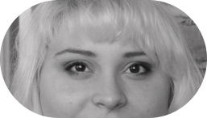
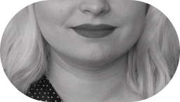

Salle d’attentes
2022
Jeune commissaire Manif d’art 10
crédits photo : Catherine Robitaille
2022
Jeune commissaire Manif d’art 10
crédits photo : Catherine Robitaille
Ma pratique commissariale s’ancre dans une réflexion
autothéorique
sur les arts et se traduit parfois en conversation podcast, parfois en exposition et d’autres fois sous forme textuelle.
↓
autothéorique
sur les arts et se traduit parfois en conversation podcast, parfois en exposition et d’autres fois sous forme textuelle.
↓
placeholder
This is some text inside of a div block. This is some text inside of a div block.This is some text inside of a div block.This is some text inside of a div block.This is some text inside of a div block.This is some text inside of a div block.This is some text inside of a div block.This is some text inside of a div block.
partenaire de présentation
Name of organisation
Name of organisation
Name of organisation
Name of organisation
Name of organisation
Name of organisation
Name of organisation
Name of organisation
18 EXPOSITIONS
256 PUBLICATIONS
34 PARTENARIATS
256 PUBLICATIONS
34 PARTENARIATS
DÉROULE →
Réactives. Réveiller l’archive
2024
Dans le cadre du projet Jeunes commissaires de MANIF D’ART - La Biennale de Québec
OU → Maison Hamel-Bruneau, Québec
AVEC → Izabelle Desroches, Delphine Egesborg et Frédérique Laliberté
crédits photos → Marc-Antoine Hallé
Courtepointe
2023
Rapiécer les morceaux. 9e édition de la Foire en art actuel de Québec
OU → Espace 400, Québec
CREDITS → Rémi Belliveau, Anouk Verviers, La Famille Plouffe.
crédits photos → Stéphane Bourgeois
Æntre-deux
2022
Exposition des finissant.es en arts visuels et médiatiques de L’Université Laval
OU → La Fabrique, Québec
Salle d’attentes
2022
Dans le cadre du projet Jeunes commissaires de MANIF D’ART - La Biennale de Québec
OU → Criterium, Québec
CREDITS → Stéphanie Tremblay
AVEC → Karine Payette, Vincent Hinse et Stéphanie Tremblay
crédits photos → Catherine Robitaille
Sans titre (Le char à Philip)
2021
Dans le cadre du projet La galerie qui tuffera pas 3 ans
CREDITS → Magali Hébert-Huot
crédits photos → Philip Gagnon
Les encans de la quarantaine
2021
CREDITS → Estée Preda
AVEC → Julie Bellavance, Isabelle Demers, Catherine McInnis et Estée Preda
démarche
Formée en histoire de l’art et en journalisme, je m’intéresse depuis plusieurs années à la conversation et à l’expérience comme mode d’analyse des pratiques en arts actuels.
Ces échanges sont pour moi des manières d’accepter le dissensus et toute la subjectivité qui existe dans l’appréciation des arts visuels. En donnant la parole aux individus dans un cadre sécuritaire et empathique, je souhaite entendre les opinions des autres tout en partageant mon expérience unique des œuvres.
Ma pratique commissariale s’ancre dans une réflexion autothéorique sur les arts et se traduit parfois en conversation podcast, parfois en exposition et d’autres fois sous forme textuelle.
biographie

Sevia Pellissier est une autrice, commissaire et travailleuse culturelle originaire de Québec. Formée en histoire de l’art et en journalisme à l’Université Laval, elle s’intéresse principalement aux pratiques conceptuelles, performatives et numériques tout en entretenant une passion pour la création de discours portant sur les arts visuels.
En 2015, elle fonde le magazine culturel À l’est de vos empires et en devient la directrice générale et artistique en 2020. Hyperactive culturelle, elle collabore régulièrement avec divers organismes et publications comme Vie des arts.
Elle signe le commissariat de plusieurs projets dont Menus et vilains (2022), Salle d’attentes (MANIF D’ART 10, 2022) Æntre deux (Finissant.e.s en arts visuels de l’Université Laval, 2022) en plus d’avoir participé à la réalisation d’une multitude d’expositions dans le cadre de ses fonctions au sein de centres d’artistes de Québec.
En 2015, elle fonde le magazine culturel À l’est de vos empires et en devient la directrice générale et artistique en 2020. Hyperactive culturelle, elle collabore régulièrement avec divers organismes et publications comme Vie des arts.
Elle signe le commissariat de plusieurs projets dont Menus et vilains (2022), Salle d’attentes (MANIF D’ART 10, 2022) Æntre deux (Finissant.e.s en arts visuels de l’Université Laval, 2022) en plus d’avoir participé à la réalisation d’une multitude d’expositions dans le cadre de ses fonctions au sein de centres d’artistes de Québec.
publications
La commission d'enquête collégiale
Série balado en collaboration avec les étudiant.e.s du CEGEP GARNEAU, Québec.
2023
FRÉDÉRIQUE LALIBERTÉ : PATAUGER DANS LE RÉEL
(Automne 2022) La Cahier des arts visuel Volume 13, Québec.
2022
BALADE AUDIO : Paradis Liberté
Audioguide pour la 8e édition de la Foire en art actuel de Québec,
commissariée par Paul Brunet. Québec.
commissariée par Paul Brunet. Québec.
2022
GIORGIA VOLPE : OBJETS SUR-NATURELS
(Hiver 2021) Ex Situ, no 27 Décompositions, Montréal.
2021
LOOSE CANON : Chuck Samuels, On photography
(4 juin 2020) Éclaireurs 3 – VU, Québec.
2021
MYTHES ET MENSONGES À MONCTON : « Les histoires nécessaires
(4 septembre 2019) Vie des arts. Montréal
2019
dans les médias
Les finissants de l’UL : Une chambre à soi à la Fabrique
(4 juin 2022) Josianne Desloges, Journal Le Soleil, Québec.
2022
MANIF 10 : JEUNES COMMISSAIRES ALLIÉES DE L’ART
(9 avril 2022) Josianne Desloges, Journal Le Soleil, Québec.
2022
Entrevue avec trois jeunes commissaires pour la 10e MANIF D’ART
(Automne 2022) La Cahier des arts visuel Volume 13, Québec.
2022